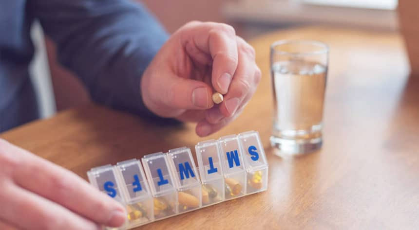
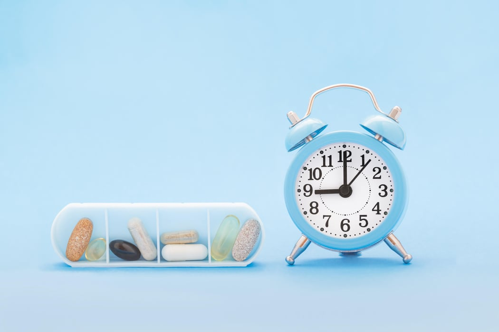
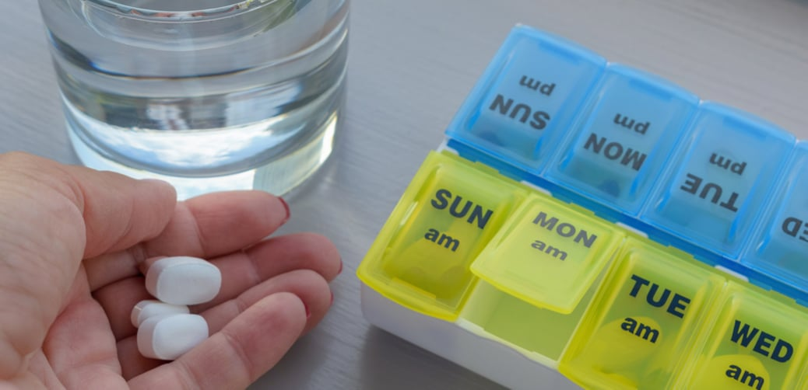

“You're braver than you believe, and stronger than you seem, and smarter than you think.”
Welcome to Patient Institute, your trusted resource for understanding the critical importance of taking medication properly for a healthier and happier life. We are dedicated to empowering patients and their caregivers with the knowledge and tools needed to ensure medication adherence, ultimately leading to improved health outcomes.
Medications are vital in palliative care, providing comfort and pain relief to individuals with terminal illnesses.
Medications like antihistamines help manage allergies and prevent severe allergic reactions. This helps one to be pure from all kinds of allergies.
Antibiotics arecrucial for treating bacterial infections and preventing their spread.
Many people with chronic conditions, such as diabetes, hypertension, or asthma, rely on medications to maintain their health and prevent complications.
Adhering to ,medication is generally important for managing and improving health but there can be negative impacts for patients as well.
Medication have side effects on patients: some medications may cause adverse side effects which, can be uncomfortable or even harmful. This information is in line with of Peddie N. et al(2011) suggested that hormone Therapy has intense side effects such as joint pains, pains throughout the whole body, memory loss, difficulty in concentration, lack of sleep as well as loss of sexual desire. Some medications may cause unwanted side effects, making it difficult for patients to adhere to their prescribed regimen.
Medications reduces quality of life and led to dependency: medications can sometimes impact patients quality of life due to side effects and also long term medication may become depedent on the medication and may worry about what will happen if they need stop taeking, therefor it is in line with Fassino. S. et al(2002) who started prolonged medication intake may lead to drug dependency and hence reduces quality for in elderly population. Some patients may experience fear or anxiety related to medication, which can deter them from taking it as prescribed.
Causes stigma on patients: some patients may feel stigmatized for taking certain medications such as those of mental conditions, this is in line with Yan X. J. et al (2021) stated that stigma is characterized by social discrimination based on negative stereotypes toward a particular population and in three types experience stigma, internalized stigma which individuals endorsement of various stereotypes toward their conditions and lastly perceived stigma the one that relates to individualls intuition of disciminatory behaviour displayed by others especially on patients with AIDS, cancers and obsity experiences more stigma hence lead to patients experiencing depression and anxiety and decreased treatment adherence.
Leads to complexity: managing multiple medications with different dosing schedules can be challenging and lead to mistakes or misses dosage. Parker .et al (2011) also emphasized patients stages of diseases elderly often have multiple phamalogical therapies, which represents challenging to patients and physicians due to complexity of medications leading to poor medications adherence, also stated that variations in the dosages, frequencies and administration instructions contribute to the complexity of medicatiojn regimen.
Medications can enhance the quality of life by managing chronic conditions, reducing pain and improving overall health.
Medications are often used to manage pain and prevent infection during post-surgery recovery. This brings about light that medications are essential for global health initiatives.
Medications can be crucial in treating mental health conditions, helping individuals manage their emotions and thoughts.
Medications have played a significant role in controlling and even eradicating certain diseases through vaccination and treatment.
Drug absorption is the process by which a drug enters the bloodstream from its site of administration. The rate and extent of drug absorption can be affected by a number of factors. The method by which a drug is administered can greatly influence its absorption. Common routes include oral (by mouth), intravenous (IV), intramuscular (IM), subcutaneous (SC), transdermal (through the skin), and inhalation.
Medication absorption is the movement of a drug from its site of administration into the blood. Oral drugs enter the stomach where they either dissolve and pass through the cell membranes of epithelial cells lining the stomach or travel undissolved through the stomach to the small intestine, which is the most common site of absorption.